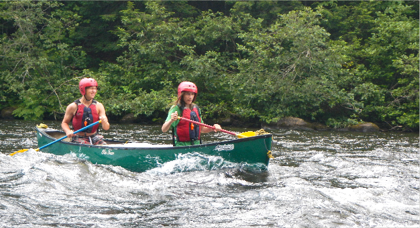
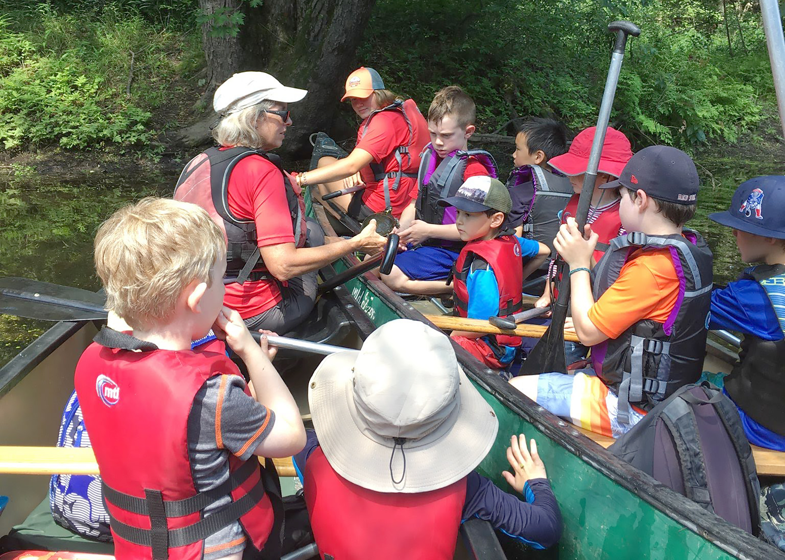

River Camp
EXPEDITION-BASED, NATURE-FOCUSED, CANOEING CAMP
Each day is a new adventure as we canoe different locations, exploring our region's beautiful waterways. Young people, ages 6 -
17, who enjoy being outdoors and learning about nature, will become capable canoeists and have fun with activities such as canoe
camping, challenge games, and field studies. An enriching, in-depth summer experience!
REGISTER ONLINE Pay the deposit online by credit card (call if you prefer to pay by check). Pay the balance when you send your camp forms.
 WHICH SESSION IS FOR ME?
WHICH SESSION IS FOR ME?


WEE PADDLE
for ages 6-7
PADDLE and PLAY! This session introduces campers to canoeing and rivers. Paddling together in giant canoes, the mornings will include games, stories, a special craft, and a riverside break for lunch.

CANOE, CRAFTS, & LORE
for ages 8-10
OUTDOOR FUN! Campers gain independence as they learn to steer a canoe. This session includes storytelling, nature crafts, and games that follow a river theme.
EXPLORATIONS
for ages 11-14
DISCOVERY! This popular program combines canoeing and nature explorations. A special canoe-camping overnight is the finale to a great week. Lots of laughs, games, learning and fun! Build paddling confidence as you make new friends. No experience necessary.

ADVENTURE CHALLENGE
for ages 13-16
INTRO TO WHITEWATER! Teenagers with some previous canoeing capability will learn advanced paddling skills in order to take control and "play" in beginner whitewater while gaining an understanding of how rivers work. The week ends with an overnight on the shores of a beautiful regional whitewater river.
Prerequisite: EXPLORATIONS or similar experience (with approval from camp director). Must meet certain swimming requirements - Red Cross level 4 or equivalent.
LEADERSHIP EXPEDITION
for ages 14-17
WILDERNESS EXPERIENCE! This expedition is for capable canoeists interested in taking on leadership roles. The spectacular St. Croix River in northern Maine offers a friendly yet challenging paddle on moving water, dotted with small rapids. We may observe moose and eagles as we paddle, pole, and sail our canoes down this rugged, pristine waterway. An experience of a lifetime!
Prerequisite: ADVENTURE CHALLENGE or similar experience (with approval from camp director). Must meet certain swimming requirements - Red Cross level 4 or equivalent.
Offered every other year, (on 'even' numbered years).
River Camp 2019 Sessions
WEE PADDLE
WEE PADDLE
CANOE, CRAFTS, & LORE
CANOE, CRAFTS, & LORE
EXPLORATIONS
EXPLORATIONS
ADVENTURE CHALLENGE
LEADERSHIP EXPEDITION
About River Camp
WHAT IS RIVER CAMP?
River Camp is a unique, adventure-based, environmental education canoeing camp. Campers have fun spending the days outdoors, experiencing and exploring nature. They learn valuable canoeing skills while paddling different local rivers and water bodies. Sessions are enhanced by visits from experts, educational tours, field studies, service projects, stories and crafts (for younger campers), and overnight canoe camping expeditions (for older campers). Sessions are kept small with low ratios, to ensure individual attention and provide the opportunity for campers to get to know each other.
WHY RIVER CAMP?
Campers leave with a greater connection, appreciation and respect for the outdoors. They build self-esteem and learn team-work through mastering control of a canoe. Our expeditions provide campers with opportunities for leadership roles. Campers meet new friends and develop camaraderie through the adventures they share together.
WHO RUNS RIVER CAMP?
River Camp is operated by Nashoba Paddler LLC. Its camp leaders are teachers, outdoor educators, and river enthusiasts committed to providing a fun, safe nature learning experience. Campers are taught canoeing skills and safety by our American Canoe Association certified instructors. Every session has a lifeguard and all leaders hold CPR and First Aid certifications.
Hear from Our Campers

I like River Camp because a lot of my friends do it and we get to learn about nature each day. One of my favorite places that we go to is Dead River because we have seen Big Al there. He’s a giant snapping turtle and he is so cool.
- Owen, age 10

My favorite part of camp was the overnight because I never usually go camping and we got to sleep in tents and cook over a campfire. Also, I learned a lot at camp and I actually did a presentation on canoeing at school. It also made me decide to join the swim team because of the confidence I got around water.
- Bella, age 13

I liked going to “Blueberry Island” because it had a lot of interesting rocks and places to explore, and we could pick some blueberries. Two years ago we had to fight the wind to get to the island, but last year the conditions were good.
- Chase, age 10

It was the first time I paddled on white water. It was a lot of fun and interesting to learn about all the different strokes. I also liked going moose hunting. We saw about 20 moose including some families!
- Sheila, age 15

I was scared at first, but I loved learning how to canoe on white water. It’s something I never would have done if it wasn’t for River Camp. And it was cool to see new places and hang out with people I didn’t know.
- Lindsay, age 14

One day we made ice cream! Our leader brought ice and salt with him in his boat. We each got to make our own. My first one leaked so I had to do it again, but it was worth it in the end - it was so good!
- Cary, age 12 (right)
Nashoba Paddler's River Camp must comply with regulations of the Massachusetts Department of Public Health (105 CMR 430.000) and is licensed by the Groton Board of Health. Information on 105 CMR 430.000 can be obtained at (617) 983-6761.
398 West Main Street, Groton, MA | (978) 448-8699
Mailing Address: PO Box 228, West Groton, MA 01472
All rights reserved, Nashoba Paddler, LLC 2019 ©